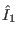
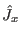
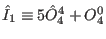
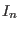
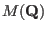

Next: Landé Factor Up: McPhase USERS MANUAL Previous: Progam Workflow Contents Index
In table 3 the different single ion modules are listed
together with the standard operator sequence
 .
.
Usually, internal single ion modules are used as a starting point. Alternatively, the single ion properties can be calculated by a program module which has to be written in c. Details about this can be found in chapter 14. Several external modules are supplied also with the program package.
The filename given for each atom in mcphas.j or mcdiff.in determines, which single ion module is to be used for a specific ion in the calculation. As internal single ion modules there are currently available an isotropic spin (internal module brillouin, see appendix B), an anisotropic doublet (internal module kramers, see appendix A), and the rare earth crystal field (internal module so1ion and cfield, see section 6).
Internal Single Ion Property Modules:
[brillouin] If the internal module brillouin (Brillouin function used for single ion properties, see appendix B) is used, the single ion property file must start with
#!MODULE=brillouin
and the corresponding spin quantum numberhas to be given in the first uncommented lines. Here is an example:
#!MODULE=brillouin #<!--mcphas.sipf--> # single ion parameter file for Gd J = 3.5
[kramer] If the internal module kramers (anisotropic doublet ground state, see appendix A) is used, the single ion property file must start with
#!MODULE=kramer
and the corresponding saturation magnetisations have to be given in the first uncommented line. Here is an example:
#!MODULE=kramer #<!--mcphas.sipf--> # single ion parameter file for CeCu2 paramnames= |<+|Ja|->| |<-|Jb|->| |<+|Jc|->| params= 1.6 0.58333 1.1
[so1ion]In order to use the rare earth crystal field module the first line should read
#!MODULE=so1ion
then the ion name should be given followed by a list of nonzero crystal field parameters (for a more detailed description of this module refer to section 6).
#!MODULE=so1ion #<!--mcphase.sipf--> IONTYPE=Ce3+ B20= 0.1e-1 B22 = -0.3e-1 B40 = 0.0 B42 = 0.0 B44 = 0.0 B60 = 0.0 B62 = 0.0 B64 = 0.0 B66 = 0.0
The standard operator sequence of this module can be modified by enabling perl parsing of the sipf file, i.e. putting instead of ”IONTYPE=” a line ”#!perl with IONTYPE=”. Then (i) all variables have to be given in perl notation, i.e. putting a ”$” sign in front of the variable name. (ii) all lines (except comment lines starting with '#') and variable declarations have to end with ';'. In the following example we show how to redefine operator  (by default the x component of the total angular momentum  to . Moreover, one of the RIXS operator is (re)defined, which enables to specify the appropriate tensor (note, that this will be only effective, if all the variables SIGMA0r,SIGMA0i,SIGMA1r,SIGMA1i,SIGMA2r,SIGMA2i are zero).
#!MODULE=so1ion #<!--mcphase.sipf--> #!perl with IONTYPE=Ce3+ $B20= 0.1e-1; $B22 = -0.3e-1; $B40 = 0.0; $B42 = 0.0; $B44 = 0.0; $B60 = 0.0; $B62 = 0.0; $B64 = 0.0; $B66 = 0.0; $I1 = 5.0 * $O44 + $O40; # for quadrupolar interactions # for anisotropic Resonant Inelastic X-ray Scattering $sigma1_a2u=1.423; $R12=-2* $sigma1_a2u * $Jz; # Note: Operators which may be redefined here are denoted by the variables: # I1 I2 I3 .... # Jx Jy Jz # Jx2 Jy2 Jz2 (=Jx*Jx Jy*Jy Jz*Jz) # O22S O21S O20 O21 O22 O31S .... O66
[cluster] This module is designed to combine several subsystems (described by other modules - currently kramer or so1ion) into a cluster with bilinear interactions. The Hamiltonian of such a cluster is then diagonalized exactly. Clusters can interact via interaction operators , which can be defined in the sipf file.
Here is an example of a cluster module input file, which is designed to model the hyperfine interaction of the f electrons and the nucleus of Pr.
#!MODULE=cluster #<!--mcphase.sipf--> # here must be set the filename containing the structure of the cluster #!structurefile=cluster.j # in this example we set I1,I2,I3 the I1 I2 I3 of the first ion in the cluster, which # is modelled by Pr3p.sipf (electronic magnetic moment) ... these degrees of freedom # interact by Heisenberg/RKKY interactions $I1=$I1_1; $I2=$I1_2; $I3=$I1_3; # here should follow the description of cluster magnetic moments in terms # of moments of the individual ions $GJ=0.8; $Gnuc=-0.9367e-3; $M1=$I1_1->multiply_scalar($GJ)+ $I2_1->multiply_scalar($Gnuc); $M2=$I1_2->multiply_scalar($GJ)+ $I2_2->multiply_scalar($Gnuc); $M3=$I1_3->multiply_scalar($GJ)+ $I2_3->multiply_scalar($Gnuc);
The structure of the cluster is described by a structurefile which has to contain the information about the internal structure of the cluster (positions and sipf files of the constituting subsystems, interactions), the notation is exactly the same as for the input file mcphas.j, here comes an example to be used with the above cluster.sipf to describe hyperfine interactions in Pr:
# cluster description #<!--mcphase.mcphas.j--> # # Lattice Constants (A) #! a=4.261 b=4.261 c=4.261 alpha= 90 beta= 90 gamma= 90 #! r1a= 1 r2a= 0 r3a= 0 #! r1b= 0 r2b= 1 r3b= 0 primitive lattice vectors [a][b][c] #! r1c= 0 r2c= 0 r3c= 1 #! nofatoms=2 nofcomponents=3 number of atoms in cluster unit cell/number of components of each spin #********************************************************************* #! da= 0 [a] db= 0 [b] dc= 0 [c] nofneighbours=1 diagonalexchange=1 sipffilename=Pr3p.sipf #da[a] db[b] dc[c] Jaa[meV] Jbb[meV] Jcc[meV] Jab[meV] Jba[meV] Jac[meV] Jca[meV] Jbc[meV] Jcb[meV] # A=52mK=52e-3*0.08622 meV +0 0 0.01 -4.4824e-3 -4.4824e-3 -4.4824e-3 #********************************************************************* #! da= 0 [a] db= 0 [b] dc= 0.01 [c] nofneighbours=1 diagonalexchange=1 sipffilename=prnuc.sipf #da[a] db[b] dc[c] Jaa[meV] Jbb[meV] Jcc[meV] Jab[meV] Jba[meV] Jac[meV] Jca[meV] Jbc[meV] Jcb[meV] +0 0 -0.01 -4.4824e-3 -4.4824e-3 -4.4824e-3
Of course the sipf filesPr3p.sipf and prnuc.sipf must exist and describe the 4f shell and the nucleus of Pr, respectively. For more details on this example see folder examples/Pr3Pd20Si6. Another example worth looking at is examples/LaCo3_podlesnyak_polaron. There the calculation of the magnetic structure factor of a spin polaron is demonstrated. Note: currently the observables, which are implemented in the cluster module are magnetisation and Fourier transform of magnetization density (). In order to enable these, the three components of the magnetization (M1 M2 M3) and of the individual magnetic moments of the cluster (M1_1 M1_2 M1_3 M2_1 M2_2 M2_3 ... Mn_1 Mn_2 Mn_3) have to be given in terms of the operators I1_1,I1_2,...In_m... (n=1,..,nofatoms of cluster, m=1... nofcomponents of cluster).
On the operators
In addition to the basic parameters described above the single ion property file may/should contain additional parameters as described below.